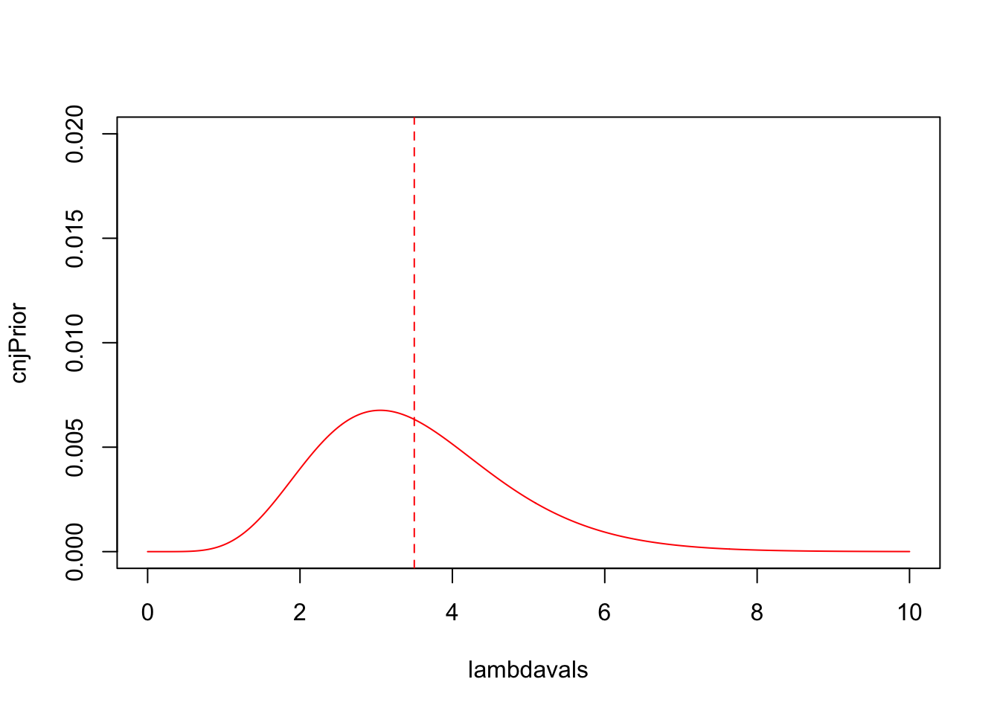

In this practical we use R to investigate the conjugate Bayesian analysis for Poisson data. We will also investigate using the effects of the prior distribution on the posterior, and the situation where our sample size grows large.
seqcurvecol), line type (lty), axis range
(xlim and ylim) etcablinefunctionplot to draw plots of general data, and
lines and point to add additional datadgamma and dnormqgamma, to produce
exact credible intervals using standard distributionssapply to evaluate a function with different
arguments specified by the element of a vectorOur dataset concerns the number of volcanoes that erupted each year from 2000 to 2018, taken from here. The data are given in the table below, where each volcanic eruption is counted in the year that the eruption started. Volcanic eruptions are split into groups depending on the severity of the eruption, as measured on the logarithmically-scaled Volcanic Explosivity Index (VEI). For example, the 2010 eruption of Eyjafjallajökull in Iceland had a VEI of 4, whereas the eruption of Krakatoa in 1883 was VEI6.
The eruptions are loosely classified as Small (VEI\(\leq 2\)), Medium (\(2<\) VEI \(<4\)), and Large (VEI \(\geq 4\)).
| Year | 2000 | 2001 | 2002 | 2003 | 2004 | 2005 | 2006 | 2007 | 2008 | 2009 |
| Small | 30 | 25 | 30 | 32 | 29 | 29 | 34 | 29 | 25 | 28 |
| Medium | 6 | 6 | 5 | 5 | 8 | 4 | 3 | 3 | 7 | 2 |
| Large | 0 | 0 | 0 | 2 | 1 | 1 | 1 | 3 | 2 | 1 |
| Year | 2010 | 2011 | 2012 | 2013 | 2014 | 2015 | 2016 | 2017 | 2018 |
| Small | 39 | 30 | 40 | 40 | 41 | 26 | 37 | 30 | 34 |
| Medium | 6 | 6 | 4 | 7 | 7 | 5 | 4 | 6 | 4 |
| Large | 3 | 0 | 1 | 0 | 1 | 0 | 2 | 0 | 1 |
R code below to input the data, and create a
new data frame called volcano, with columns
Year, Small, Medium, and
Large.
volcano <- data.frame(Year = 2000:2018,
Small = c(30, 25, 30, 32, 29, 29, 34, 29, 25, 28, 39, 30,
40, 40, 41, 26, 37, 30, 34),
Medium = c(6, 6, 5, 5, 8, 4, 3, 3, 7, 2, 6, 6, 4, 7, 7,
5, 4, 6, 4),
Large = c(0, 0, 0, 2, 1, 1, 1, 3, 2, 1, 3, 0, 1, 0, 1,
0, 2, 0, 1))Plot, points, and lines
The plot function produces a scatterplot of its two
arguments. Suppose we have saved our \(x\) coordinates in a vector a,
and our \(y\) coordinates in a vector
b, then to draw a scatterplot of \((x,y)\) we type
plot(x=a, y=b)
If the argument labels x and y are not
supplied, R will assume the first argument is x
and the second is y. If only one vector of data is
supplied, this will be taken as the \(y\) value and will be plotted against the
integers 1:length(y), i.e. in the sequence in which they
appear in the data.
All of the standard plot functions can be customised by passing additional arguments to the function. For instance, we can add a plot title and axis labels by supplying optional arguments:
type - determines the type of plot to draw. Possible
types are:
xlab, ylab - provides a label for the
horizontal and vertical axesxlim, ylim - allows for specification of a
minimum and maximum value of the corresponding axis limits,
e.g. xlim=c(0,10) will set the horizontal axis limits to be
\([0,10]\).col - can be specified to use colour for drawingFor example,
plot(x=-10:10,y=sin((-10:10)/(2*pi)), type="b", xlab='A', ylim=c(-1.5,1))
Note: Once a plot has been drawn, it is not possible to
erase any features from it - we can only add extra lines or points to
it. So, if you make a mistake drawing your plot then you’ll need to
start over with a fresh one by calling plot again.
After creating a plot, we can add additional
points to the plot by calling the points function which
draws additional points at the specified x and
y values. Similarly, the lines function will
draw connected lines between its x and y
arguments.
plot the number of Small eruptions against
the year using a vertical axis range (ylim) of \([0,50]\).types to see how the different
plots represent the data.line plot, and add
lines of different colours to the same plot for the other
two groups of eruptions.histogram of the number of
Medium eruptions - does it look like it could follow a
Poisson distribution? How else could you quickly assess this?
A Poisson distribution is often used to model the counts of random events occurring within a fixed period of time at some rate \(\lambda\). For such a random variable \(X\) where \(X\sim\text{Po}(\lambda)\) , a Bayesian analysis will require a prior distribution for the unknown Poisson parameter \(\lambda\). We have seen that the Gamma distribution provides a conjugate prior for this particular problem. Therefore, if our data \(X_1,\dots,X_n\) are \(\text{Po}(\lambda)\), and our prior distribution for \(\lambda\) is \(\text{Ga}(a,b)\). Then the posterior distribution for \(\lambda ~|~ X_1,\dots,X_n\) is given by: \[ \lambda ~|~ X_1,\dots,X_n \sim \text{Ga}(a+T, b+n), \] where \(T=\sum_{i=1}^n X_i= n\overline{X}\).
First, let’s use the Gamma distribution to identify an appropriate prior for our Poisson count data.
Standard density functions in R
R provides built-in functions to evaluate the PDF of
standard distributions. The density function for a Gamma distribution
\(\text{Ga}(a,b)\) is used as
follows
dgamma(x, shape=a, rate=b)
where x is the point (or vector of points) where we want
to evaluate the PDF, and a and b are the usual
Gamma parameter values.
sequence of 500
equally-spaced values over the interval \([0,10]\). Call this
lambdavals.lambdavals using the gamma PDF dgamma.plot of the pdf against \(\lambda\) as a solid black line.
An expert vulcanologist believes that the unknown rate of
Medium eruptions, \(\lambda\), is such that a range of \([1,6]\) would be plausible.
You may need to use a pen and paper to do some maths to answer some of the following exercise!
lambdavals, and save it as cnjPrior.cnjPrior so that they sum (integrate) to 1. Divide the
values of cnjPrior by the sum of the values in
cnjPrior, and replace cnjPrior by these
normalised values.abline using the
v argument) at the location of the prior expectation for
\(\lambda\).

Quantiles of standard densities
In addition to built-in functions for PDFs of standard distributions,
R also provides the quantile function for a pdf.
The quantile function evaluates the inverse of the cumulative
distribution function, \(F_X^{-1}(u)\).
Given a probability value \(u\in[0,1]\), the quantile function returns
the value \(x\) of \(X\) for which \(P[X\leq x]=u\), and so the quantile
functions are particularly useful for finding critical values of
distributions and for finding exact credible intervals.
The quantile function for a Gamma density \(X\sim \text{Ga}(a,b)\) is used as follows
qgamma(alpha, shape=a, rate=b)
where alpha is the lower tail probability (or vector of
lower-tail probabilities) for which we want the corresponding value(s)
of \(X\), and a and
b are the usual Gamma parameter values.
qgamma function to find a 95% equal-tailed
prior credible interval for \(\lambda\)
using the expert’s prior distribution above. Hint: find the
values of \(\lambda\) with lower and
upper tail probabilities of \(2.5\%\).The next ingredient in the Bayesian calculation requires us to capture the information contained in the data via the likelihood. In a Bayesian context, the likelihood is the conditional distribution of the data \(X_1,\dots, X_n\) given the parameter \(\lambda.\)
Let’s compute the likelihood given our data on Medium
volcanic eruptions, and add it to the plot.
poisLike that computes the Poisson
likelihood for the sample of Medium volcano eruptions. Your
function should:
lambdavolcano$Medium given the value of lambda.
Hint: the dpois function evaluates Poisson
probabilities for a vector of values x and parameter
lambda. Or you can use your own function from last
time.return it.poisLike(5)## [1] 4.225604e-17Using sapply to repeat calculations over a
vector
We have seen previously that we can use the replicate to
repeatedly call a function with no arguments. For functions which do
take an argument, we often want to call that function at many different
values. To do this, we use sapply to apply a specified
function to every element of a vector as its argument, and then return a
vector formed from the results.
sapply(x, fun)
applies the function fun to every element of the vector
x it then returns a vector containing the values of
fun(x[1]), fun(x[2]), and so on. So, to
compute the square-root of the integers \(1\) to \(10\), we would write
sapply(1:10, FUN=sqrt)
or alternatively
which applies the square root function to each of the integers 1 to 10.
There are other variations of apply which work with
matrices and other data structures, and we will see those in later
practicals.
sapply to evaluate the Poisson likelihood
(poisLike) for each of the values of \(\lambda\) in lambdavals. Save
this as like.like so that its values sum to \(1\).lines.postDirect. Normalise the postDirect
so that it sums to \(1\).
Hint: \(\text{Posterior} \propto
\text{Likelihood} \times \text{Prior}\).However, we also know that we’re using the conjugate Gamma prior with a Poisson likelihood, so our posterior distribution for \(\lambda\) will also be a Gamma with parameter values as above. Let’s verify that this is the case, and add the resulting density function to our plot.
aPost and
bPost.dgamma with the posterior parameter values to
evaluate the posterior Gamma density at each of lambdavals.
Save these values to postConjugate and normalise to sum to
\(1\).purple curve.To investigate how sensitive our results are to our choices for \(a\) and \(b\) in the prior Gamma distribution, we’re going to want to repeat our previous calculations for different values of the prior parameters. To make this easier, let’s wrap those calculations and plots in a new function that finds and draws the Gamma posterior for a given prior and data set:
gammaPoisson which:
a and
b, and the summary statistics T and
n.lambdavals.a,b,T, and n we used
for the Medium volcano data above.
a and
b.
a and b?
How does this affect your results?
In Lecture 26, we will see that show that as the sample size grows large, the posterior distribution tends towards a Normal distribution and the posterior distribution becomes progressively less affected by the choice of prior distribution.
Let’s expand our data with the records of volcanic eruptions for the
entire 20th century. As records are slightly incomplete, only the counts
of Large eruptions over this period can be considered
trustworthy. For the entire 100 years, a total of 64 Large
(VEI\(\geq 4\)) eruptions were
recorded
Large volcanic
eruptions from 1900-2018. Save these as Tbig and
Nbig.The large sample of data is clearly very informative for \(\lambda\), resulting in a posterior distribution that is concentrated over a small range of possible \(\lambda\) values. Let’s refocus our plot on that sub-interval:
xlim
argument to plot (or add it as an argument to your
function).If we suppose that \(X=(X_1,\dots,X_n)\) are an i.i.d. sample of size \(n\) from a distribution with pdf \(f(x~|~\theta)\) where \(X_i \perp X_j ~|~ \theta\) and \(f(x~|~\theta)\) is twice differentiable, then for \(n\) ‘large enough’ the posterior distribution for \(\theta ~|~ x\) is approximately \[ f(\theta ~|~ x) \approx \text{N}\left(\widehat{\theta}, \frac{1}{{I}\left(\widehat{\theta}\right)}\right), \] where \(\widehat{\theta}\) is the MLE of the parameter \(\theta\), and \(\text{I}(\widehat{\theta})\) is the observed Fisher information for a sample of size 1.
For a Poisson distribution, we have:
Large volcano
eruption data.dnorm, evaluate the Normal approximation to the
posterior pdf for \(\lambda\) over
lambdavals. Normalise it again to sum to one, and add it to
your plot using a thick dashed line.